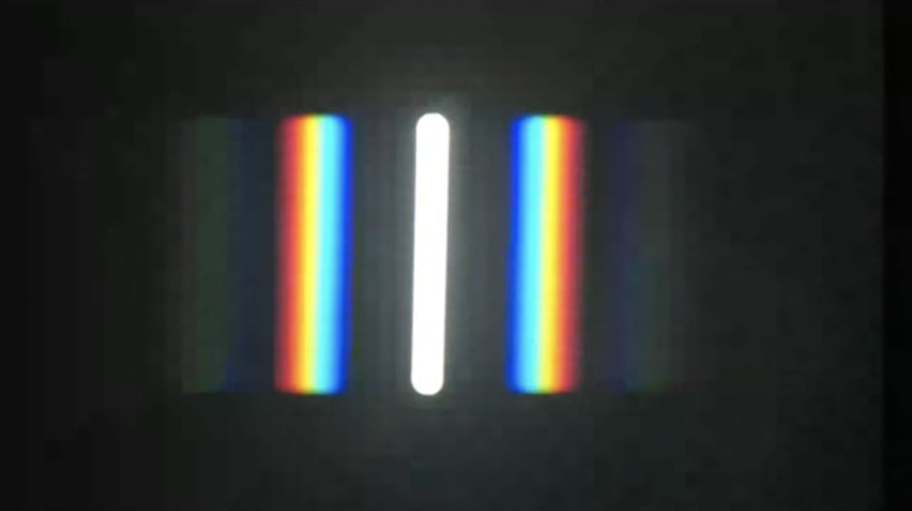
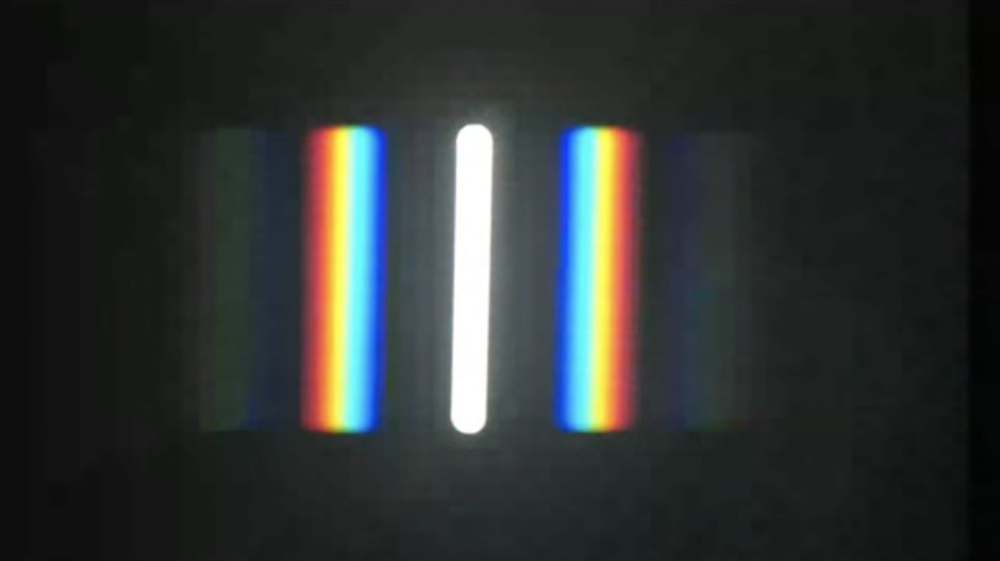

This page was generated from `/home/lectures/exp3/source/notebooks/L13/Diffraction Grating.ipynb`_.

Diffraction Grating¶
We would like to combine now the diffraction on individual slits with the multiple inteference from many slits. Such objects are called diffraction gratings and have large importance for spectroscopy but also for the compression of short laser pulses.
Let’s have a look at the sketch below.

Fig.:
We consider a number of \(N\) slits of width \(b\). The slits have a distance \(d\) from each other. Each slit acts like the slit before giving rise to a diffraction pattern, that is oscillating with decreasing amplitude. The width of this diffraction pattern is determined by \(\lambda/b\) and the pattern is given by
Now we have multiple of these “slit” sources. Each Huygens source in a slit has a corresponding Huygens source in a neighboring slit at a distance \(d\). So these pairs of sources interfer like in our multiple wave interference
where the phase difference between neighboring waves is given by
which finally gives
The intensity distribution behind a diffraction grating is now given as the product of the two contributions of single slit diffraction and multiple source interference.
Diffraction Grating
The intensity distribution generated by a diffraction grating from monochromatic light and observed in the far field is given by
where \(\lambda\) is the wavelength of the light and \(b\) the width of the slit, \(d\) the distance of the slits and \(N\) the number of slits illuminated. The angle of observation is given by \(\theta\).
Properties of the diffraction pattern¶
We may now have a look at the properties of this intensity distribution. The graph below plots the intensity distribution for a diffraction grating with \(N=8\) slits illuminated, a distance of slits \(d=4\) µm, a width of the slits of \(b=2\) µm and a wavelength of 532 nm. We make the following general observations:
The intensity pattern is consisting as we already calculated for the multiple wave interference. The main maxima are called diffraction orders charachetrized by an integer number. The central peak is the 0th order peak. The first main peak to the right is 1st diffraction order and so on.
The main peaks are seperated by \(N-2\) secondary peaks and \(N-1\) minima.
The intensity distribution is characterized by an envelope, which is the diffraction pattern of a single slit (dashed line). Thus in the example below the 2nd order peak is suppressed. The envelope will become wider, if the slits become narrower.
Position of the Main Peaks¶
The position of the main peaks requires that the numerator and the denominator are zero. This is given whenever the denominator argument is a integer multiple of \(\pi\), i.e. \(\pi d/\lambda\sin(\theta)=m\pi\) or \(\sin(\theta)=m\lambda/d\). So the first order diffraction maximum is found at \(\sin(\theta)=\lambda/d\) independent of the slit number \(N\). This means that the position of the main peaks increases linearly with the wavelength \(\lambda\) and decreases with increasing distance of the slits \(d\).

Fig.: Diffraction pattern of a grating wher 8 slits with a width of 2 µm and a distance of 4 micrometers are illuminated by a wavelength of 532 nm.
Influence of the Slit Width¶
The two plots below show the influence of the slit width while the slit distance is the same. We have again \(N=8\) slits participating with \(d=4\) µm while the slit width is \(b=2\) µm on the left side and \(b=1\) µm on the right side. The result is clearly an increased width of the envelope. The first minimum of the slit diffraction pattern occurs at \(\sin(\theta)=\lambda/b\).

Fig.: (Left) Diffraction pattern of a grating with \(N=8\) slits (\(d=4\) µm, \(b=2\) µm) with \(\lambda=532\) nm. (Right) Diffraction pattern of a grating with \(N=8\) slits (\(d=4\) µm, \(b=1\) µm) with \(\lambda=532\) nm.
Influence on the Slit Number¶
When using an increased slit number, we obtain the main diffraction peaks are becoming sharper. The location of the main peaks for the wavelength is unchanged, but as we have now \(N-2\) secondary maxima inbetween. This decreased width of the main peaks is important for the spectral resolution of the grating.

Fig.: (Left) Diffraction pattern of a grating with \(N=16\) slits (\(d=4\) µm, \(b=1\) µm) with \(\lambda=532\) nm. (Right) Diffraction pattern of a grating with \(N=100\) slits (\(d=4\) µm, \(b=1\) µm) with \(\lambda=532\) nm.
Spectral resolution¶
For the spectral resolution we have to define a criterium again, that allows us to quantify the spectral resolution. We borrow the idea we used from the optical resolution of the microscope, i.e. that two peaks are separable, if the second peak is located at the minimum of the first diffraction pattern. Here the diffraction patterns refer not to different objects on space but to different wavelength \(\lambda_1\) and \(\lambda_2\).

Fig.: Rayleigh resolution limit a grating with \(N=100\) slits (\(d=4\) µm, \(b=1\) µm) with \(\lambda_1=532\) nm and \(\lambda_2=537\) nm in the first order diffraction peak (left) and the second order peak (right).
Let us have a look at the \(m\)th order diffraction peak for the wavelength \(\lambda_1\). This occurs at
The next secondary minimum to larger angles of the diffraction pattern is then located at a position, where the numerator of the multiple wave interference
becomes zero or the argument
becomes a multiple \(l\) of \(\pi\). For the first order main peak we have had already \(N-2\) intermediate peaks as well as the 0th and now the first order peak. Therefore \(m=l/N\) and the next mimimum after the 1st order peak is at
This angle has to correspond to the position of the main peak of the first order diffraction of the wavelength \(\lambda_2\), so
Combining both equations for the two wavelength yields
and after some rearrangements (and setting \lambda_1=:nbsphinx-math:lambda)
This is the resolving power \(R\) of a grating. The ability to resolve two wavelength therefore increases with the diffraction order \(m\) and the number of slits used for the diffraction. Yet, the intensity of higher diffraction orders rapidly decreases due to the grating envelope. Therefore, the main parameter to change is the number of illuminted slits.
Our finding is illustrated in the Figure above. Where we achieve a resolution of about 5 nm, when using \(N=100\) slits at a distance of \(d=4\) µm.
 

Fig.: Diffraction pattern observed for a grating in the lecture with red light (left) and white light (right).